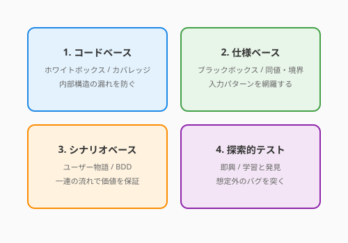

テストの全体像（4.1節）を学んだあなたは、次にこう問うはずです。「具体的に、どのテストケースを書けば十分なのか？」
すべての入力パターンをテストするのは不可能です。経験値の計算関数ひとつとっても、整数の入力パターンは事実上無限にあります。では、「十分なテスト」とはどう設計すればよいのでしょうか？
先人たちは、この問いに対して複数のアプローチを編み出しました。本節では、テストケースの設計技法を4つの流派として整理し、それぞれの強みと適所を学びます。

コードの内部構造を見て、「どの行が実行されたか」「どの分岐が通過したか」を測定するアプローチです。テスト自体を設計する技法というよりも、テストが不十分な場所を発見する地図として機能します。
「すべての行が少なくとも1回実行されたか」を測定します。
def get_quest_rank(score: int) -> str:
if score >= 90: # 行A
return "S" # 行B
elif score >= 70: # 行C
return "A" # 行D
else:
return "B" # 行Escore=95 と score=75 の2つのテストで、行A〜Dは実行されますが、行Eは通過しません。命令カバレッジは 4/5 = 80% です。score=50 を追加すれば100%に達します。
「すべての条件分岐のTrue/Falseが実行されたか」を測定します。命令カバレッジよりも厳しい基準です。
def can_accept_quest(hero: Hero, quest: Quest) -> bool:
if hero.level >= quest.required_level and not quest.is_expired():
return True # 分岐: True
return False # 分岐: False| テスト | hero.level >= required | not is_expired() | 結果 | 通過する分岐 |
|---|---|---|---|---|
| テスト1 | True | True | True | True分岐 |
| テスト2 | False | True | False | False分岐 |
この2つのテストで分岐カバレッジは100%です。しかし、hero.level >= required がTrueで is_expired() がTrueのケース（期限切れ）はテストされていません。
複合条件（and / or）の各部分がTrue/Falseの両方を取ったかを測定します。分岐カバレッジよりもさらに厳密です。
| テスト | hero.level >= required | not is_expired() | 結果 |
|---|---|---|---|
| テスト1 | True | True | True |
| テスト2 | True | False | False |
| テスト3 | False | True | False |
3つのテストで、各条件がTrue/Falseの両方を取ることを確認できます。
カバレッジ100%は「すべてのコードが実行された」ことを意味しますが、「正しく動いている」ことの証明ではありません。
# カバレッジ100%でも見逃すバグの例
def calculate_tax(price: int) -> int:
return price * 0.1 # 本来は0.08のはずだが...
def test_tax():
assert calculate_tax(1000) == 100 # テストは通る。しかし税率が間違っている！カバレッジは「テストされていない場所」を見つけるための地図であり、品質の十分条件ではありません。「カバレッジが高い＝テストが十分」ではなく、「カバレッジが低い＝テストが不十分な場所がある」と読むのが正しい使い方です。
コードの中身を見ずに、仕様（入力と期待出力の関係）に基づいてテストケースを設計する技法です。
同値分割では、入力を「同じ振る舞いをするはずのグループ（同値クラス）」に分け、各グループから代表値を1つずつ選んでテストします。
例: QuestForgeの経験値倍率計算
仕様: 「英雄のレベルがクエスト推奨レベル未満なら倍率2.0、以上なら倍率1.0」（推奨レベル = 10）
| 同値クラス | 入力範囲 | 代表値 | 期待される倍率 |
|---|---|---|---|
| 有効クラス1: レベル不足 | 1〜9 | 5 | 2.0 |
| 有効クラス2: レベル十分 | 10〜100 | 15 | 1.0 |
| 無効クラス1: レベルゼロ以下 | 0, -1, ... | 0 | エラー or 特別処理 |
class TestXpMultiplier(unittest.TestCase):
def test_low_level_hero_gets_double(self):
# 有効クラス1の代表値
self.assertEqual(calculate_xp_multiplier(quest_lv10, hero_lv5), 2.0)
def test_high_level_hero_gets_normal(self):
# 有効クラス2の代表値
self.assertEqual(calculate_xp_multiplier(quest_lv10, hero_lv15), 1.0)
def test_zero_level_raises_error(self):
# 無効クラスの代表値
with self.assertRaises(ValueError):
calculate_xp_multiplier(quest_lv10, hero_lv0)バグは「境界」に集まる傾向があります。境界値分析では、同値クラスの境目の値を重点的にテストします。
推奨レベル10の場合:
| テストケース | 値 | 意味 |
|---|---|---|
| 境界の直下 | 9 | レベル不足の最大値 |
| 境界そのもの | 10 | 境界値（どちらに属する？） |
| 境界の直上 | 11 | レベル十分の最小値 |
class TestXpMultiplierBoundary(unittest.TestCase):
def test_one_below_threshold(self):
self.assertEqual(calculate_xp_multiplier(quest_lv10, hero_lv9), 2.0)
def test_at_threshold(self):
# ここがバグの温床。「未満」なので10は倍率1.0のはず
self.assertEqual(calculate_xp_multiplier(quest_lv10, hero_lv10), 1.0)
def test_one_above_threshold(self):
self.assertEqual(calculate_xp_multiplier(quest_lv10, hero_lv11), 1.0)「未満」と「以下」の取り違え、< と <= の混同——こうしたバグは境界値分析で効率的に発見できます。
ユーザーが実際にシステムを使う一連の流れ（シナリオ）をテストケースとして記述する技法です。第1章で書いたユースケースが、ここでテストの根拠になります。
class TestQuestCompletionScenario(unittest.TestCase):
def test_hero_completes_quest_and_levels_up(self):
"""シナリオ: 英雄がクエストを完了し、レベルアップする"""
# Given: レベル1の英雄と、報酬100XPのクエスト
hero = Hero(name="Aria", level=1)
quest = Quest(title="First Adventure", difficulty="NORMAL",
base_xp=100, recommended_level=1)
# When: クエストを完了する
result = complete_quest(quest, hero)
# Then: 経験値が加算され、レベルアップしている
self.assertEqual(result.xp_gained, 100)
self.assertEqual(hero.level, 2) # 100XPでレベル2に
self.assertEqual(quest.status, "COMPLETED")Given（前提）→ When（操作）→ Then（期待結果） の形式で書くと、テストが「仕様書」としても読めるようになります。この形式はBDD（振る舞い駆動開発）とも呼ばれ、非エンジニアとの共通言語にもなります。
ここまでの3つの流派は、いずれもテストケースを事前に設計します。一方、探索的テストは、実際にソフトウェアを動かしながら「怪しいところはないか？」と探り、発見と学習を同時に行う即興的なアプローチです。
無目的に触るのではなく、チャーター（探索テーマ）を定め、時間を区切ったセッションで行います。
チャーター: 「クエスト報酬計算で、極端な入力値を試す」
時間: 30分
探索メモ:
- レベル999の英雄 → 正常に動作
- 難易度を空文字に → 500エラー（バグ発見！）
- 報酬XPに負の値 → 経験値が減る（仕様漏れ？）探索的テストは、仕様書やコードカバレッジでは見つけられない「想定外の使い方」を発見するのに効果的です。自動化されたテストと組み合わせることで、守りの層がさらに厚くなります。
各流派には得意・不得意があります。一つの流派だけに頼るのではなく、組み合わせてテストの網を編みます。
| 流派 | 強み | 適所 |
|---|---|---|
| コードベース | テストの抜け漏れを可視化 | カバレッジ計測、リグレッション防止 |
| 仕様ベース | 仕様から体系的にケースを導出 | 入力パターンの網羅、境界値のバグ検出 |
| シナリオベース | ユーザー視点の動作保証 | 受入テスト、チーム内の仕様共有 |
| 探索的テスト | 想定外のバグ発見 | リリース前の最終確認、新機能の品質探索 |
以下の関数の仕様に対して、同値分割と境界値分析を行い、
テストケース一覧を表形式で提示してください。
各テストケースに「有効クラス/無効クラス」「境界値」のラベルをつけてください。
[関数の仕様を記載]以下のコードの分岐カバレッジを100%にするために必要な
最小限のテストケースを列挙してください。
各テストケースがどの分岐を通過するかも示してください。
[コードを貼り付け]執筆メモ: